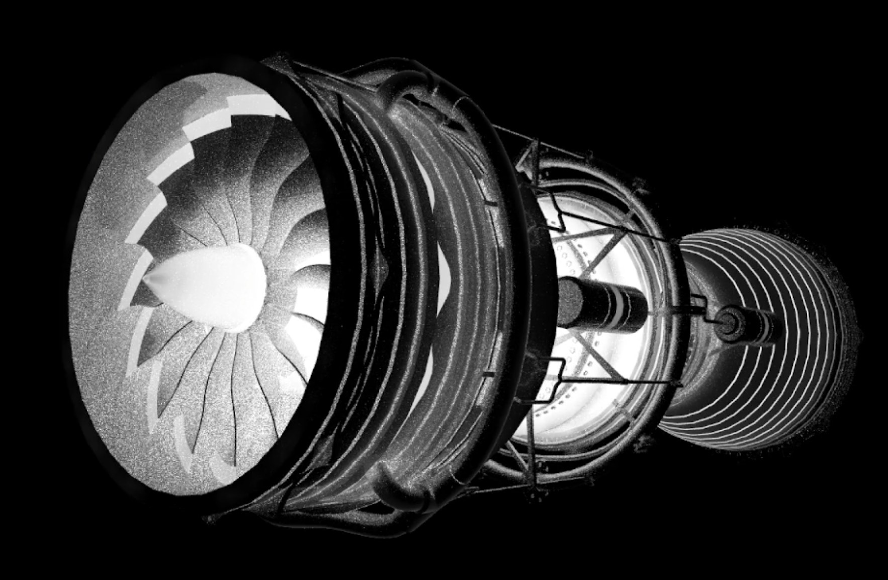
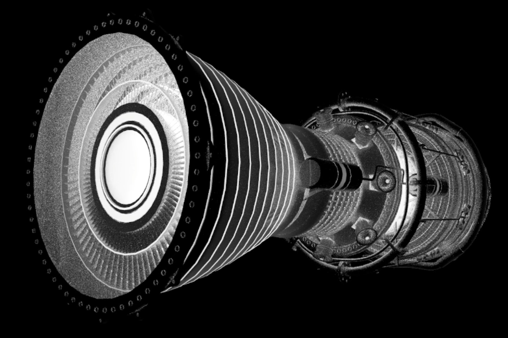

Rendering the invisible:
LWIR path tracing on a live thermal solver
Hi, my name is German. I build rendering engines in C++, and for the last while I have been busy with a slightly unusual kind of photorealism — the kind you cannot see with your own eyes. If you are here, chances are you are curious about computer graphics, physics, or both. In this article I will walk through how to render what a thermal camera sees in the LWIR band (8–14 µm) — and, more importantly, where the temperatures come from. Because in my engine they are not painted on: they are computed by a lattice Boltzmann solver running live on the GPU, in the same frame loop as the path tracer. Read carefully, and by the end the pictures of a jet engine below will feel almost obvious. Almost.
I will deliberately stay at the level of ideas and equations: no full implementation here, only the load-bearing physics and the architecture. If you are new to path tracing itself, I once wrote a two-part introduction from first principles (part 1, part 2, in Russian) — this text assumes you are comfortable with rays, BRDFs and Monte Carlo.
1. A camera that photographs temperature
Everything warmer than absolute zero glows. For objects around room temperature the peak of that glow sits near 10 µm — right in the middle of the 8–14 µm atmospheric window that LWIR cameras use. This single fact rearranges all your rendering intuitions. First: there is no such thing as “the light source”. Walls, the floor, your face, the sky — every surface in the scene emits. Second: RGB albedo textures mean nothing here. In LWIR a material is not a color; it is a pair (emissivity, temperature) — how willingly it radiates, and how hot it is. The scene stops being a set of textured meshes and becomes a thermodynamic system that happens to be photographed.
2. The radiometry of one band
The good news: we do not need per-wavelength spectral rendering. The sensor integrates
the whole band, so a single number per path is enough — the band radiance of a black body
at temperature T, which is Planck’s law integrated over 8–14 µm.
It is convenient to express it through the black-body fraction function
F(0→λT) — the share of total emission below a given λT:
This function is smooth and strictly monotonic in T — which matters at the
other end of the pipeline. A real thermal camera does not show radiance; it shows
apparent temperature: it inverts Lband back into kelvins
(a few Newton iterations, since the function is monotonic), adds sensor noise in the
temperature domain (NETD, about 30 mK for a microbolometer), and maps a user-chosen
temperature window onto grayscale. That is the whole reason thermal footage looks the way
it does: you are not looking at an image, you are looking at the UI of a measurement
device. So the renderer ends exactly the same way: radiance → apparent temperature →
NETD noise → thermal window → pixels.
3. Kirchhoff instead of albedo
Where does emissivity come from? The lazy answer is “from a texture”. The physical
answer is: from the BRDF you already have. Kirchhoff’s law says that, in
equilibrium, what a surface absorbs it must emit. Split the energy at a surface into a
specular Fresnel part F(θ, n+ik), a diffuse part ρd,
and emission — and emissivity stops being an independent parameter:
Two families of consequences fall out of this one line. Dielectrics have high
emissivity near normal incidence, dropping toward grazing angles — which is exactly why
water and glass turn into mirrors of the cold sky at shallow angles in thermal footage.
Metals, with large n and k, barely emit at all: in LWIR a
polished metal part is a cold mirror that shows you the temperatures of its
surroundings instead of its own. In my material library the n+ik pairs are
fitted so that the normal-incidence ε matches published IR thermography tables, and one
preset drives both the render and the simulation side of the engine.
4. Path tracing the band
The tracer itself is a classic backward path tracer with one twist: every hit
contributes. At each intersection the path picks up
ε(θ)·Lband(Tsurface) weighted by the current
throughput, then continues by sampling the reflection — specular versus diffuse lobe.
Between hits, the air works as a gray absorbing medium: over a segment of length
s the radiance relaxes toward the emission of the air itself,
and a ray that escapes the scene ends on the “sky” — a huge cold ceiling at roughly 255 K, which is why puddles and car roofs read freezing-cold in outdoor thermal images. Accumulation is progressive, with one practical detail: while the physics below is running, the tracer blends frames with an exponential moving average instead of a plain progressive mean — so the picture stays converged and breathes together with the simulation.
5. The temperature problem
And now the honest question: what do we plug into
Tsurface? The industry-standard answer is to paint temperatures
by hand or bake them once in an offline solver. It works — the way a photograph of a
statue works. Heat in a real scene moves: the hot core warms the casing by
conduction, the plume rises by convection, every surface trades energy with every other
by radiation, and the LWIR image is precisely a portrait of that motion. I wanted the
full loop — conduction, convection and radiation — computed live, on the same GPU,
inside the same frame. That requirement has essentially one good answer.
6. The lattice Boltzmann method, in one breath
The lattice Boltzmann method is philosophically the same trick as path tracing.
Path tracing refuses to solve the rendering equation analytically and instead simulates
photons, letting the image emerge. LBM refuses to solve the Navier–Stokes equations
directly and instead simulates a toy gas, letting hydrodynamics emerge. On a regular
grid, every cell stores a handful of numbers fi — “how much gas
is flying in direction ei” — and each time step is two moves:
// the whole solver, conceptually for each cell: // 1. collide — 100% local f[i] += (f_eq(ρ, u, θ) − f[i]) / τ for each cell, each direction i: // 2. stream — copy to neighbor f_new[i] at (x + e[i]) = f[i] at (x)
Collision needs no neighbors at all; streaming is a pure memory shift; a wall is just
a population bouncing back. No global linear systems, no pressure solves — the algorithm
is embarrassingly parallel, which is why it maps onto a GPU like it was designed for it.
Viscosity and heat diffusion hide inside the relaxation time,
ν = cs²(τ − ½) — and the mysterious ½ has a beautiful origin in
the trapezoidal rule, but that is a story for another article.
7. One lattice for mass, momentum and heat: D3Q39
The subtle part is temperature. The popular way is to run a second, separate distribution for heat next to the flow. I went with the stricter option: a multispeed thermal lattice, where a single distribution carries mass, momentum and energy honestly. The price of honesty is mathematical: the discrete velocity set must reproduce Gaussian moments up to 7th order, and that cannot be done with the usual 19 or 27 velocities. The minimal 3D answer is D3Q39: six shells of velocities — the rest particle, an octahedron, a cube, a doubled octahedron, a doubled cuboctahedron and a tripled octahedron. Each shell is an orbit of the cube’s symmetry group, each carries one weight, and the weights are the solution of a small linear system that matches discrete sums against Gaussian integrals. Two facts make the whole construction click: the equilibrium is a 3rd-order Hermite projection of the Maxwellian, and every one of the speeds — 1, √3, 2, 2√2, 3 — lands exactly on a lattice node, so streaming remains an exact shift with zero interpolation.
Solid bodies are simpler: inside a solid there is no flow, only conduction, and a passive scalar needs far less isotropy — a tiny 7-velocity lattice per cell is enough, with a per-material relaxation time (metal, plastic, heater presets — the same material entry that drives ε on the render side). Air and solid exchange heat through a Robin-type flux coupling at the interface. That is conjugate heat transfer: the engine casing on fig. 1 is warm because the core is hot, not because anyone painted it warm.
8. Radiation: the renderer’s BVH does double duty
One mechanism refuses to fit into the lattice: radiative exchange. Photons do not
hop between neighboring cells — they cross the whole scene in a straight line. So
radiation is a separate Monte Carlo pass, and here comes my favorite architectural
detail of the project: the physics reuses the renderer’s acceleration
structure. Every surface cell of a solid shoots a few cosine-distributed rays
through the very same TLAS the camera uses, via inline ray queries. At each hit,
Russian roulette on the local emissivity decides absorption versus a diffuse bounce;
an absorbed ray brings home the T⁴ of what it saw, an escaping ray brings the
environment temperature. The net source
S ∝ ε·(⟨T⁴seen⟩ − T⁴self) feeds straight back into
the thermal lattice. One scene, two kinds of rays: camera rays make the image, physics
rays move the heat.
9. Closing the loop
[ LBM × k substeps ] → [ 3D temperature volume ] → [ path tracer samples live T ] → [ EMA accumulate ]
↑ |
└────────────── MC radiation over the same TLAS ─────────┘
Every frame the solver advances a few substeps, temperatures land in a 3D texture, and the path tracer reads the surface temperature at every hit — no baking step, no synchronization ceremony. Debug views live on the number keys: visible-light path tracing, a volume ray-march of the velocity field, the temperature field in the classic ironbow palette, and the LWIR view itself. Watching a plume detach from a hot part in the ironbow view and then flipping to LWIR to see what a camera would make of it never gets old:


Look closer at fig. 3 and fig. 4: the bright core is not a light source I placed — it is a boundary condition. Everything else, from the warm gradient along the casing to the dim reflections in the polished parts, is the physics doing its job: conduction through the solid lattice, convection in the air lattice, radiation over the BVH, Kirchhoff at every surface.
10. What is next
The current bottleneck is memory bandwidth: a dense grid with 39 floats per air cell is a heavy way to store mostly-quiet space. The plan is block-sparse adaptive resolution (16³ bricks in a VDB-style topology, refined near surfaces and steep gradients), cut-cell boundaries instead of the voxel staircase, a correlated-k atmosphere instead of the gray absorber, and Fresnel polarization for water and glass. Plus the tooling direction: importing an arbitrary asset, marking hot regions with a brush, and baking the solved surface temperatures back into its textures — turning the whole engine into a thermal look-dev tool.
If you take one thing away, let it be this: an LWIR image is not a stylized grayscale photo — it is a rendering of a temperature field, and it is only as honest as the physics that produced that field. Simulate the field, derive the emissivity, respect the sensor, and the pictures start telling the truth.
References
- Zvezdin G. — Physically-based rendering. Ray marching, part 1 / part 2 (Habr, in Russian).
- Zipunova E., Zvezdin G., Perepelkina A., Levchenko V. — Prediction of Moments in the Particles-on-Demand Method for LBM, Communications in Computational Physics, 33 (2023).
- Krüger T. et al. — The Lattice Boltzmann Method: Principles and Practice, Springer, 2017.
- Shan X., Yuan X.-F., Chen H. — Kinetic theory representation of hydrodynamics, J. Fluid Mech. 550 (2006): the D3Q39 multispeed lattice.
- Guo Z., Zheng C., Shi B. — Discrete lattice effects on the forcing term in the LBM, Phys. Rev. E 65 (2002).